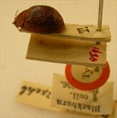
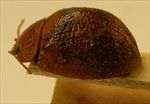
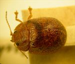
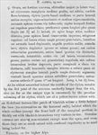

Click on images to enlarge
.jpg){kind=link}

Paropsis alpina type specimen, lateral view & labels
.jpg){kind=link}

Paropsis alpina type specimen, lateral view
.jpg){kind=link}

Paropsis adelaidae type specimen, dorsal view
{kind=link}

Paropsis alpina, description
Name
Trachymela alpina (Blackburn, 1896)
Type specimen
Location: BMNH
Label data: “Type” (red-bordered circle), “4591”, “Blackburn coll. 1910-236.”, “Paropsis alpina Blackb.”
Female; carded specimen; Size: approximately 9 mm (4 lin, as given by Blackburn) mm; HCE: 1.55 mm (obtained by measurement from lateral view in photo).
Notes
The type specimen is a carded female, 4 lin (~9mm) in length. Its most striking feature is the mix of lighter brown and darker brown patches on the elytra, quite similar to those in the orbicularis-group species, Ta70 and Ta44. This type specimen also has a dark-brown fuscous band extending across the anterior half of the elytra. The surface of the elytra is almost devoid of verrucae. The scutellum is smooth (“lævi"), and according to Blackburn, the antennae have A3 markedly longer than A4. All of these characteristics are present in most species in the orbicularis group. HCE (measured from the photo) is about 17.25% of body length, though it would be slightly larger if the specimen were smaller than 9 mm (the pronotum is often extended forward in carded specimens even if the length given by Blackburn is accurate). These characteristics, except for the fuscous band across the front of the elytra, would suggest it could be Ta70 (T. orbicularis), a species whose distribution extends very close to the highlands of southern NSW. However, it is also possible that this is a species related to Ta70 within the orbicularis-group.
References
Blackburn, T. 1896, "Revision of the genus Paropsis. Part I", Proceedings of the Linnean Society of New South Wales, vol. 21, no. 4, 637-693 (page 690).
Copyright © 2026. All rights reserved.